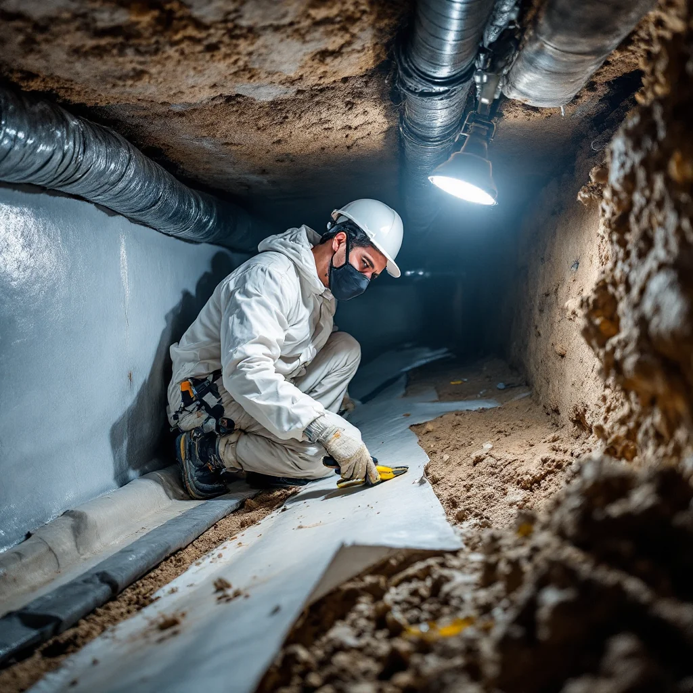

Crawl Space Mold Removal — Find It, Fix It, Seal It
Crawl space mold is one of the most common — and most overlooked — mold problems in the El Paso County area. Most homeowners never enter their crawl space. The mold grows for years on joists, subfloor decking, and insulation before anyone knows it's there. Meanwhile, that air circulates up into the living spaces of the home through the stack effect.

Why Crawl Space Mold Is So Common Here
Colorado Springs' dry reputation doesn't protect crawl spaces. The rapid humidity swings typical of this region — particularly the July–August monsoon season — push significant moisture into crawl spaces through vents and soil vapor migration. A few conditions accelerate the problem dramatically:
- Inadequate or degraded vapor barriers allow ground moisture to evaporate directly onto cold wood surfaces
- Older vent-and-screen crawl space designs admit outside air during high-humidity periods — the opposite of what they're supposed to do
- Drainage failures around the foundation after rain events keep soil saturated near the structure
- Poor or missing insulation creates cold surfaces where humidity condenses
Signs you may have crawl space mold: musty odors from floor registers or the lower level of your home, unexplained worsening of indoor allergies, softening floors, or visible dark spots on joists visible from the access hatch.
How We Handle Crawl Space Mold
- Free Inspection: We enter the crawl space with proper equipment, inspect all accessible surfaces, take moisture readings, and document findings. You get a written report and itemized quote.
- Containment: The crawl space is an enclosed environment, but we still establish proper containment and use protective equipment throughout to prevent cross-contamination.
- Remove Contaminated Materials: Affected insulation and any materials that can't be treated in place are removed and properly disposed of. Insulation once contaminated cannot be remediated — it must go.
- HEPA Vacuum and Treat Structural Wood: Joists, subflooring, and foundation walls are HEPA-vacuumed and treated with EPA-registered antimicrobial solution. Commercial-grade borate treatments penetrate wood to inhibit future growth.
- Address Moisture Source: Whether it's a drainage issue, vapor migration, or ventilation problem, we address the source or provide clear direction on what needs to happen.
- Encapsulation (Recommended): A heavy-duty vapor barrier sealed across the entire crawl space floor and foundation walls prevents future moisture entry. This is the only long-term solution — without it, mold recurs.
What Every Crawl Space Job Includes
- Written, itemized quote before work begins
- Full removal of contaminated insulation
- HEPA vacuuming and antimicrobial treatment of all structural surfaces
- Moisture source identification and correction guidance
- Encapsulation available as part of the same project
- Photo documentation throughout
- Written warranty on treated areas
What Does Crawl Space Mold Removal Cost?
- Crawl space mold remediation: $1,000 to $4,000 depending on size and extent of contamination
- Crawl space encapsulation: adds $3,000 to $6,000 depending on crawl space size and condition
- Combined remediation and encapsulation: $4,000 to $10,000. Most homeowners do both at once, since the crawl space is already open and the cost per square foot is lower when combined
Is crawl space encapsulation worth it?
For any Colorado Springs crawl space that has had mold, encapsulation is the permanent solution. Remediation removes the existing colony; encapsulation prevents the next one by eliminating the moisture source. Without it, the same conditions that created the first problem will create the second.
Does crawl space mold affect the air I breathe upstairs?
Yes. The stack effect pulls air from the lowest points of the home — including the crawl space — upward through the living areas. Mold spores and mycotoxins from crawl space growth routinely reach living spaces through this natural air movement, regardless of how well-sealed your floors appear.
Ready to Inspect Your Crawl Space?
Free inspection. Written estimate. We'll tell you exactly what's there and what it'll cost to fix — before any work starts.
(719) 496-8287Schedule Free Inspection